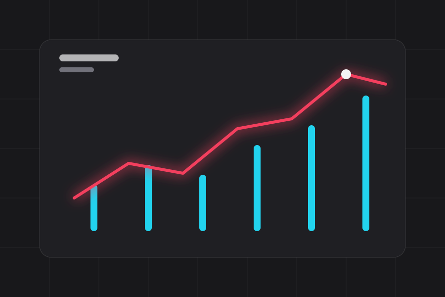

Groups
FoldEach navigation group is a <details> with a cyan label, open by default.
The overview's parts in the other shell. A top bar that stays put, a sidebar that is a drawer on a phone and a fixed column on a desktop, and the page beside it. Nothing about a component changes.
The controls read the same in the narrower column: a lit tube is active, a hairline is idle, a badge with a lamp is a state.
| Part | Built on | State |
|---|---|---|
| Top bar | position: sticky | Up |
| Drawer | popover below 64rem | Up |
| Groups | <details open> | Up |
| Desktop collapse | not built | Off |
FoldEach navigation group is a <details> with a cyan label, open by default.
LitThe link to this page carries aria-current="page". That is what lights its edge.
DarkThe column scrolls on its own, in the page colours. No white rail in either scheme.

Fifty-fifty
The same block the overview uses, here to show it fits the narrower column.
DocsNot in this version. The drawer is for narrow screens; on a wide screen the column is always there.
An open popover is pinned to the dark scheme so the browser never paints it white. Inside it the palette resolves to its dark half: one step blacker than the lifted grey around it.
Looking for the markup? The sidebar component page shows this page in a frame with its source beside it.